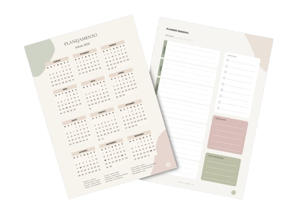
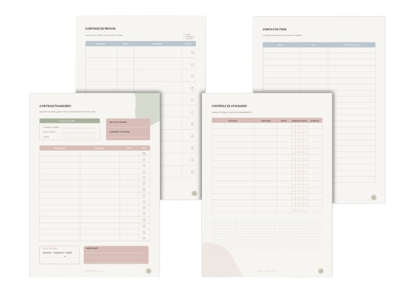

Prazos de provas e trabalhos espalhados em lugares diferentes (ou em nenhum lugar).
Veja o que tem dentro
Tudo o que você precisa para organizar seu semestre.
O planner foi pensado para acompanhar sua vida universitária de verdade — desde a organização das disciplinas até provas, trabalhos, estudos e rotina.


Faculdade
- Sobre mim
- Minhas metas
- Semestre acadêmico
- Grade horária
- Controle de atividades
- Controle de provas
- Controle de notas
- Atividades em grupo
Estudos
- Plano de estudos
- Controle por disciplina
- Ciclo de estudos
- Leitura / fichamento
Planejamento
- Planejamento anual
- Planejamento mensal
- Planner semanal
- Planejador de rotina
Vida real
- Controle financeiro
- Contatos úteis
18 páginas de planejamento e organização
O arquivo completo inclui páginas adicionais de apresentação e orientação de uso.